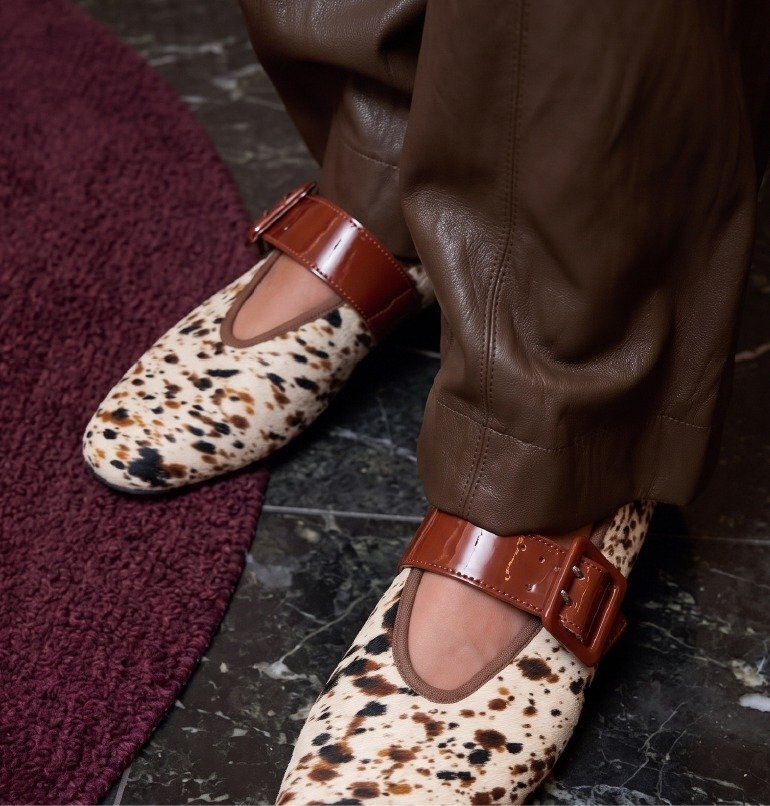
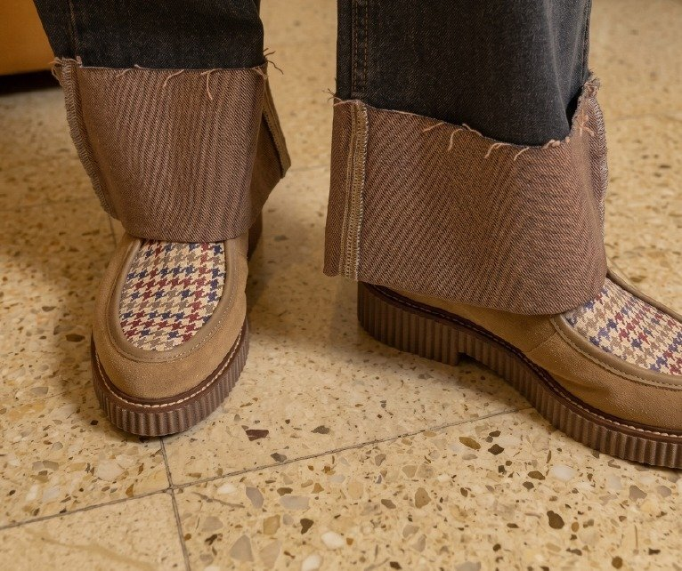
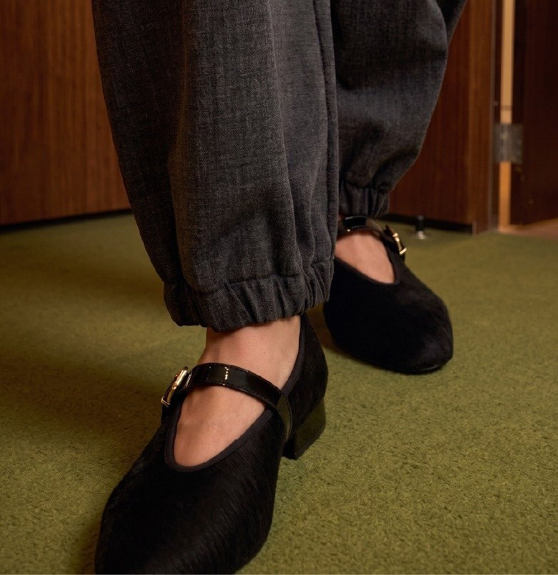
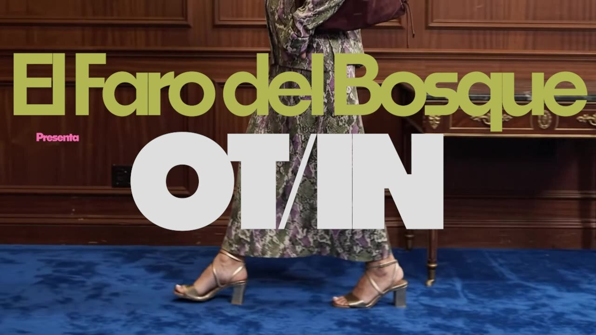
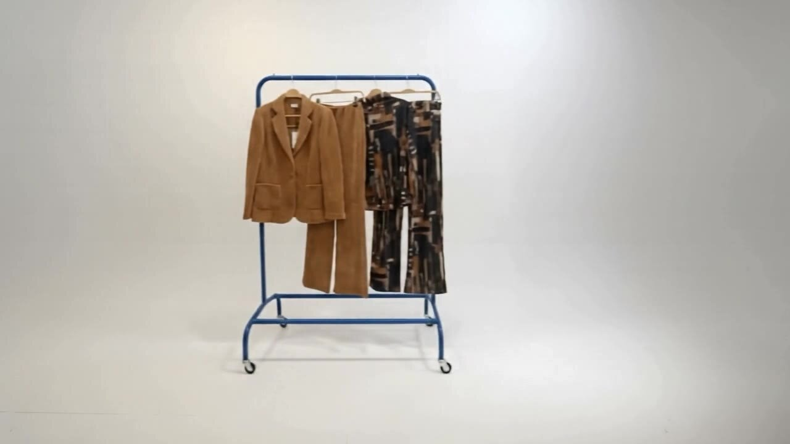

Aquí Estamos
El Faro del Bosque — Otoño/Invierno 26
Campaña OI26 para El Faro del Bosque. Las fareras —las que cuidan la luz, las que vuelven cada temporada— vistiendo la colección en los interiores cálidos y las alfombras de color que definen la marca.

Concepto
Aquí Estamos habla de volver. De las fareras que cada temporada regresan a encender la luz y, este año, la traen puesta. La colección OI26 se despliega como un reencuentro: maderas nobles, alfombras de color y las prendas de siempre contadas de otra manera. No es una campaña sobre ropa nueva. Es una campaña sobre lo que permanece.


Dirección visual
Cada escena ocurre dentro del faro: maderas cálidas, alfombras saturadas —azul, verde, burdeos— y una luz que entra siempre de lado, como de atardecer. Sobre ese fondo, la campaña se detiene en el detalle: un puño, un zapato, una textura. La prenda se lee de cerca antes que de cuerpo entero. La tipografía de campaña —"El Faro del Bosque presenta OT/IN"— se superpone a la escena como un cartel de cine, firmando cada pieza.



Sistema de campaña
El lanzamiento se despliega en vídeo hero para la home, un lookbook fotográfico con las fichas de producto, un vídeo de catálogo para la tienda y contenido recortado para redes sociales y WhatsApp. Todo comparte la misma gramática visual: madera, alfombra de color y el sello tipográfico de "El Faro del Bosque presenta".


© MORE PROJECTS
[ PRTFL® — 26 ]
CLASSS
More Projects
More Projects
More Projects
More Projects


Alhaja
Alhaja
Creamos joyas artesanales que no solo se llevan, se sienten. Objetos que se convierten en símbolos de lo que somos y sentimos. Cada pieza es un recuerdo heredado y reinventado.


Etnia Barcelona
Etnia Barcelona
Una campaña para Etnia Barcelona que transforma la personalidad en sabor, utilizando color, humor y metáforas visuales para representar distintos moods del verano.